Al je antwoorden worden gewist en je begint opnieuw. Weet je het zeker?
Jouw resultaten
Start van het leven · 2e Toetsmoment 2017‑2018
—
/ 63
0
Goed
0
Fout
0
Niet beantwoord
Vraag 1
U ziet hier een doorsnede door de wand van een tubulus seminiferus. Welke cel wordt aangegeven met de witte pijl?
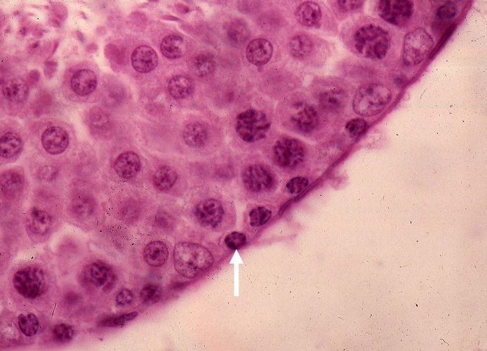
Vraag 2
Welk onderdeel van het cytoskelet vormt de basis van een flagel (zweepdraad)?
Vraag 3
Kies de juiste alternatieven.
Tijdens de meiose II ontstaan twee met een aantal chromosomen.
Vraag 4
De ectocervix is grotendeels bekleed met:
Vraag 5
De corona radiata is opgebouwd uit:
Vraag 6
Wat is de functie van glycogeen in de epitheelcellen van de vagina?
Vraag 7
U ziet hier een schematische weergave van de innesteling van een embryo. De cytotrofoblast is weergegeven met nummer ...
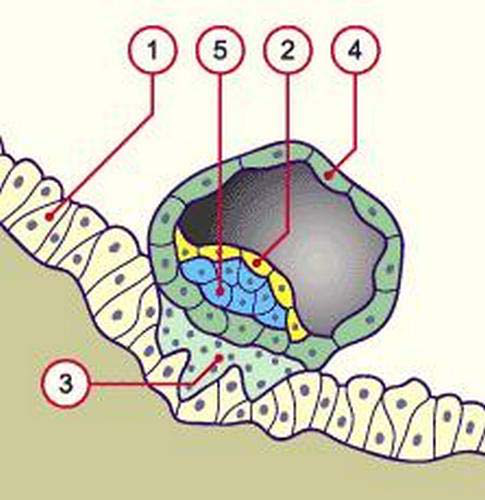
Vraag 8
De heer De B., 33 jaar, komt met zijn 31-jarige vrouwelijke partner op uw spreekuur omdat hun kinderwens niet in vervulling gaat. Zij is ruim drie jaar geleden gestopt met het slikken van de pil. Bij het oriënterend gynaecologisch fertiliteitsonderzoek (OFO) kwamen geen bijzonderheden aan het licht. De algemene anamnese vermeldt DM type I sinds zijn 12e levensjaar. Sinds enige tijd treedt er bij het orgasme geen ejaculatie op (droog klaarkomen). U vermoedt een specifiek probleem.
Met welk onderzoek kunt u uw waarschijnlijkheidsdiagnose bevestigen?
Vraag 9
Welk deel van het mesoderm vormt een structuur die van belang is voor de inductie van de ontwikkeling van de wervelkolom?
Vraag 10
Zet in chronologische volgorde van de embryonale ontwikkeling:
Vraag 11
Wat ontwikkelt zich uit het ectoderm? Selecteer de drie juiste antwoorden.
Meerdere antwoorden mogelijk.
Vraag 12
Hoe wordt het proces genoemd dat op onderstaande afbeeldingen te zien is?
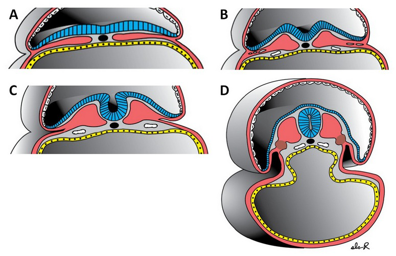
Vraag 13
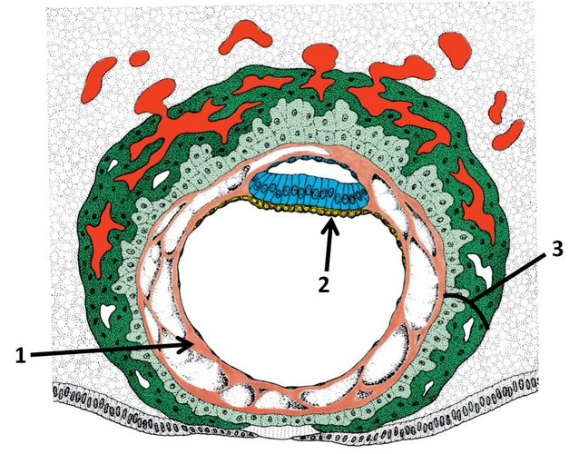
Welke structuren zijn in onderstaande afbeelding met de cijfers 1, 2 en 3 aangeduid?
Sleep een optie naar de bijbehorende rij, of tik eerst op een kaart en dan op een rij.
1
Sleep hier naartoe
2
Sleep hier naartoe
3
Sleep hier naartoe
Vraag 14
Hoe noemen we de embryonale cellen die op de plek van de eerdere hypoblastcellen liggen nadat de definitieve dooierzak is ontstaan?
Vraag 15
Hoe heet de ruimte die aangeduid is met de witte pijl in onderstaande afbeelding?
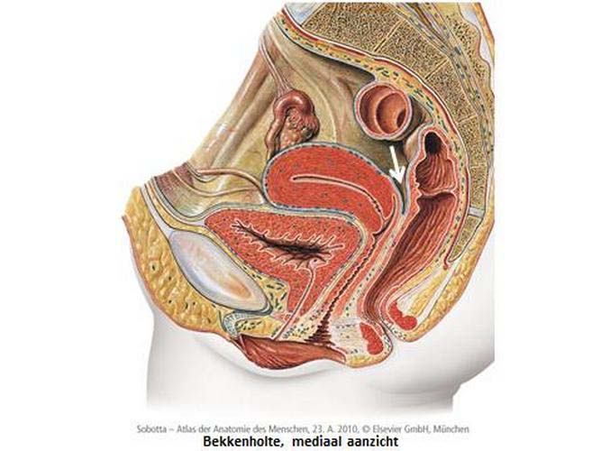
Vraag 16
Welke ossale structuur is onderdeel van het os coxae?
Vraag 17
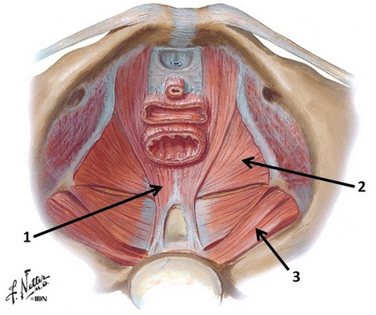
Welke spieren zijn in onderstaande afbeelding met de cijfers 1, 2 en 3 aangeduid? Selecteer de juiste opties.
Sleep een optie naar de bijbehorende rij, of tik eerst op een kaart en dan op een rij.
1
Sleep hier naartoe
2
Sleep hier naartoe
3
Sleep hier naartoe
Vraag 18
'Een abortuspil kan je nu ook bij de huisarts krijgen', kopt Metro Nieuws op 27 januari 2017. Feitelijk is dit een overtijdbehandeling binnen de eerste zestien dagen. De minister wil dat meer vrouwen deze moeilijke beslissing in de vertrouwelijke omgeving van een huisarts kunnen maken, en hoopt daarmee ook dat het aantal herhaalde abortussen in Nederland daalt. Daarmee komt de overtijdbehandeling onder de WAZ te vallen.
Aan welke eisen moet de huisarts volgens de Wet Afbreking Zwangerschap voldoen om deze abortuspil/overtijdbehandeling in de eerste 16 dagen van de zwangerschap voor te mogen schrijven?
Vraag 19
Kies de juiste alternatieven.
Bij het Marfan syndroom worden gezien: een lengte en .
Vraag 20
U bent klinisch geneticus en bovenstaande jongen ziet u op de polikliniek. Hij is verwezen met een kleine lengte. De mentale ontwikkeling verloopt normaal. Bij lichamelijk onderzoek ziet u de kenmerken zoals te zien op de foto en korte vingers. U hoort geen hartruis. Welk syndroom staat bovenaan in de differentiaaldiagnose?
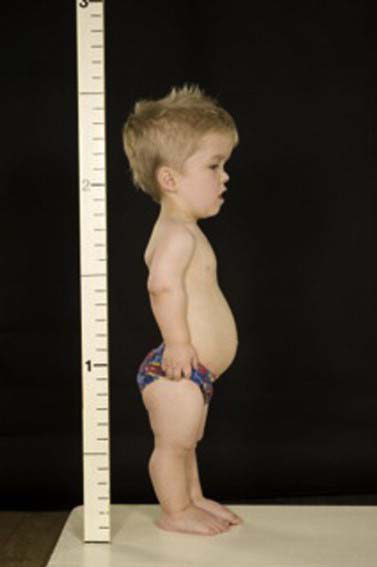
Vraag 21
Kies de juiste alternatieven.
Bij een complete (multi-segment) anterieure homeote transformatie van de wervelkolom wordt naar verwachting aangetroffen: en .
Vraag 22
Een teveel aan vingers of tenen (polydactylie) kan verschillende verschijningsvormen aannemen. Bij welk van onderstaande vormen is sprake van een posterieur-anterieur-posterieure (P-A-P) polariteit?
Vraag 23
Uteriene NK-cellen zijn nodig voor de juiste afweer tijdens de implantatie van de blastocyst.
Vraag 24
Welke twee bevindingen bij lichamelijk onderzoek van de buik pleiten het meest voor een dunnedarmobstructie?
Meerdere antwoorden mogelijk.
Vraag 25
Een 58-jarige vrouw komt op het spreekuur van de huisarts. Al enkele maanden heeft zij regelmatig buikpijn. Sinds 1 dag heeft ze koorts en veel pijn links onder in haar buik. Ook is zij misselijk. Haar defaecatiepatroon is wisselend. Zij is seksueel actief. Regelmatig heeft zij witte vaginale afscheiding. Niet riekend. De mictie is niet pijnlijk. Bij lichamelijk onderzoek heeft ze een temperatuur van 38,5°C en druk- en loslaatpijn linksonder in haar buik.
Wat is de meest waarschijnlijke diagnose?
Vraag 26
Meneer Verhip, 28 jaar, komt op het spreekuur van de huisarts. Hij heeft sinds gisteren veel pijn in zijn buik. De pijn begon rond de navel en is nu naar rechtsonder in de buik afgezakt. Hij kan de meest pijnlijke plek met een vinger aanwijzen. De rit in de auto was zeer pijnlijk, vooral bij hobbels in de weg.
U vermoedt een specifieke diagnose. Welke twee bevindingen bij lichamelijk onderzoek maken deze diagnose waarschijnlijker?
Meerdere antwoorden mogelijk.
Vraag 27
De sensitiviteit van de NIPT voor trisomie 21, bij toepassing in de algemene populatie, ligt het dichtst bij:
Vraag 28
Meneer en mevrouw G. hebben een combinatietest laten doen. Er blijkt een verhoogd risico te zijn op trisomie 21. De zwangerschap is inmiddels gevorderd tot ruim 16 weken. Naar aanleiding van de uitslag is vandaag een counselingsgesprek gehouden. Het echtpaar geeft daarna te kennen beslist zekerheid te willen over het kind. Wel schrikt het invasieve karakter van sommige opties hen af. Zij zijn bang daardoor een miskraam te krijgen van misschien juist wel een gezond kind. Behalve zekerheid willen ze dus ook een zo klein mogelijk risico voor hun (hopelijk) niet-afwijkende kind.
Welk vervolgonderzoek is in hun situatie aangewezen en met welke argumentatie?
Vraag 29
Een slechte placentatie kan leiden tot afwijkingen bij de foetus. Welke van onderstaande afwijkingen past daar het meest bij?
Vraag 30
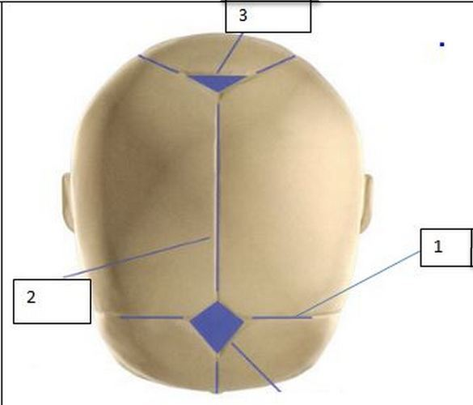
In onderstaande afbeelding is een foetale schedel weergegeven met daarin de verschillende schedelnaden en fontanellen. Welke schedelnaden en fontanellen worden aangegeven met de cijfers 1, 2 en 3?
Sleep een optie naar de bijbehorende rij, of tik eerst op een kaart en dan op een rij.
1
Sleep hier naartoe
2
Sleep hier naartoe
3
Sleep hier naartoe
Vraag 31
In onderstaande afbeelding zijn de vlakken van Hodge weergegeven met de nummers A tot en met D. De foetale schedel bevindt zich tussen indalingsvlak C en D. Er is sprake van een niet vorderende uitdrijving. Wat is nu de meest aangewezen behandeling?
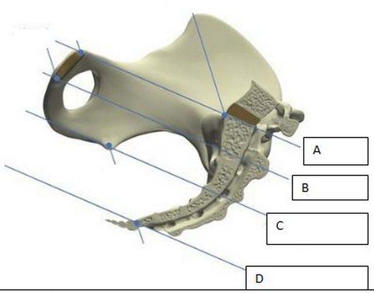
Vraag 32
Een P2 is net bevallen van een gezonde zoon. Zij beviel op medische indicatie in het ziekenhuis vanwege een HELLP-syndroom. De baring werd ingeleid. Vanwege een niet-vorderende ontsluiting (NVO) en een pijnstillingsverzoek kreeg patiënte oxytocine en epidurale anesthesie. Na 2 uur persen was er sprake van een niet-vorderende uitdrijving (NVU) waarop een vacuümextractie werd verricht. Er werd een zoon geboren van 4500 gram met een goede start. De placenta kwam vlot en spontaan. Na de geboorte van de placenta was er sprake van een fluxus (haemorrhagia post partum) van 2 liter. Bij inspectie van het perineum was een kleine oppervlakkige ruptuur zichtbaar.
Wat is de meest waarschijnlijke oorzaak van de fluxus postpartum?
Vraag 33
Een 24-jarige G1P0 meldt zich in het ziekenhuis met pijnlijke harde buiken. Zij is thans 31 weken zwanger. Er is een beetje slijm- en bloedverlies. Geen vochtverlies. De zwangerschap is tot op heden ongecompliceerd verlopen. Er wordt een cervixlengte gemeten van 2 cm. De fibronectinetest is positief.
Wat is nu de meest aangewezen behandeling?
Vraag 34
Een 29-jarige G2P1, amenorroeduur 40 weken, is door de verloskundige ingestuurd naar de gynaecoloog vanwege verzoek tot inleiden. Er wordt een CTG gedraaid.
Welke CTG-registratie past het best bij deze foetus?
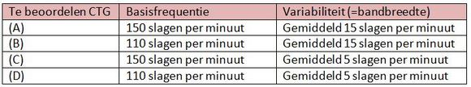
Vraag 35
Kies de juiste alternatieven.
Foetale asfyxie wordt gekenmerkt door een gebrek aan zuurstof in . Het microbloedonderzoek laat in dit geval een zien.
Vraag 36
Een 30-jarige G2P1 met een amenorroeduur van 39 weken is onder controle in het ziekenhuis vanwege een keizersnede (sectio) in de voorgeschiedenis en een groeivertraagde foetus bij deze zwangerschap. De zwangerschap wordt, vanwege de groeivertraging, intensief gemonitord met echo.
Wat is de meest aangewezen behandeling?
Vraag 37
Bij dreigende vroeggeboorte worden verschillende medicamenten gebruikt. Wat is het werkingsmechanisme van nifedipine?
Vraag 38
Waar in het lichaam worden de volgende vier stoffen afgegeven aan de bloedbaan?
Sleep een optie naar de bijbehorende rij, of tik eerst op een kaart en dan op een rij.
Oxytocine
Sleep hier naartoe
PAPP-A
Sleep hier naartoe
ACTH
Sleep hier naartoe
Inhibine B
Sleep hier naartoe
Vraag 39
Een 20-jarige G1P0 komt voor een echo bij 22 weken vanwege een verdenking groeivertraging. Bij 16 weken heeft zij ook een echo gehad vanwege bloedverlies. Het echoscopisch onderzoek liet toen geen bijzonderheden zien; normale foetale groei met normaal vruchtwater. Heden wordt een foetale groei gezien op de p50 met een diepste pocket vruchtwater van 1 cm.
Welke specifieke anamnestische vraag is in dit geval belangrijk en waarom?
Vraag 40
Bij een 17-jarige patiënte met een primaire amenorroe worden lage FSH-, LH-, en Oestradiolspiegels gevonden in het bloed. De secundaire geslachtskenmerken zoals mammaontwikkeling en schaambeharing zijn nauwelijks aanwezig (Stadium I volgens Tanner). Bij een GnRH-stimulatietest waarbij GnRH intraveneus wordt ingespoten stijgen de FSH- en LH-spiegels fors.
In welk orgaan ligt hoogstwaarschijnlijk de stoornis?
Vraag 41
Kies de juiste alternatieven.
Tijdens de luteale fase van de menstruele cyclus leidt de vorming van door tot een van de basale lichaamstemperatuur.
Vraag 42
Tijdens een zwangerschapscontrole wordt de zwangere uterus systematisch onderzocht met de handgrepen van Leopold. Wat wordt onderzocht als de zorgverlener de tweede handgreep van Leopold uitoefent?
Vraag 43
Kies de juiste alternatieven.
Op welke manier verschilt een zwangere met een amenorroe van 24-28 weken van een niet-zwangere wat betreft nierfunctie? Bij een zwangere patiënte is de glomerulaire filtratiesnelheid dan bij een niet-zwangere; de nierdrempel voor glucose is dan bij een niet-zwangere; de urineafvloed is dan bij een niet-zwangere; de afvoer van afvalstoffen is dan bij een niet-zwangere.
Vraag 44
Kies de juiste alternatieven.
De aanwezigheid zorgt voor het in stand houden van het corpus luteum in het van de zwangerschap.
Vraag 45
Een 22-jarige G1P0 is 10 weken gravida. Zij komt voor eerste controle op het spreekuur van de gynaecoloog. Haar medische indicatie is een sectio in de voorgeschiedenis. Omdat patiënte vermoeidheidsklachten aangeeft wordt labonderzoek ingezet. De uitslag laat het volgende zien.
Wat is hier de meest waarschijnlijke diagnose?
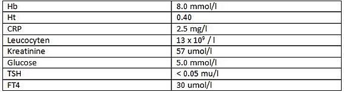
Vraag 46
Noem een langetermijncomplicatie van endometriose.
Vraag 47
Een 24-jarige patiënte wordt naar de gynaecoloog verwezen vanwege cyclische buikpijnklachten bij een actieve kinderwens. Sinds 8 maanden is patiënte gestopt met de pil en tot op heden is een zwangerschap uitgebleven. Na het stoppen met de pil zijn de menstruaties ook weer toenemend pijnlijk geworden. Voordat zij startte met de pil had ze ook altijd van die hevig pijnlijke menstruaties. Hoewel de mictie niet pijnlijk is ervaart zij de defecatie wel als zeer pijnlijk. Bij lichamelijk onderzoek, inclusief speculumonderzoek, vaginaal en rectaal toucher, werden geen afwijkende bevindingen gedaan.
Welk aanvullend onderzoek is hier het meest geïndiceerd om de juiste diagnose te stellen?
Vraag 48
Kies de juiste alternatieven.
De secretie en excretie van melk in de kraamperiode wordt ook wel genoemd en staat onder andere onder invloed van en .
Vraag 49
Kies de juiste alternatieven.
Tijdens de lactatie kunnen vrouwen klachten ervaren als opvliegers en atrofie van het vagina-epitheel. Dit wordt veroorzaakt door een verminderde afgifte van wat leidt tot een lage spiegel.
Vraag 50
Een 36-jarige P5 is 3 uur geleden bevallen van een gezonde zoon. De partus verliep zeer vlot en ongecompliceerd. Patiënte geeft aan hevige buikpijnkrampen te ervaren. Ze heeft verder geen andere klachten. Zij heeft vlak na de bevalling nog mictie gehad. De placenta kwam makkelijk en spontaan. Bij lichamelijk onderzoek worden, behoudens een pijnlijke buik bij palpatie en percussie, geen afwijkingen gevonden.
Wat is nu de meest logische vervolgstap?
Vraag 51
Een 29-jarige P1 bezoekt de huisartsenpost met koorts, buikpijn en pijnlijke borsten. Zij is 3 dagen geleden bevallen van een gezonde dochter. De partus werd gecompliceerd door een ernstige fluxus van 3 liter bloed, meest waarschijnlijk op basis van atonie. Bij manueel natasten op de OK werden geen placentaresten gevonden. Zij voelt zich lang niet zo fit als ze zou willen en ligt ook nog veel op bed. Tevens heeft zij ruime, ietwat riekende lochia. De baarmoeder staat op navelhoogte. Patiënte geeft aan dat beide borsten pijnlijk zijn, maar niet rood.
Wat is, op basis van de meest waarschijnlijke diagnose, de meest aangewezen behandeling?
Vraag 52
Kies de juiste alternatieven.
Een 40-jarige G1P0 is reeds 20 weken zwanger. Zij komt voor een reguliere controle op het spreekuur. Tot op heden is de zwangerschap ongecompliceerd verlopen. Zij voelt de baby goed bewegen. De bloeddruk meet 140/95. Bij het structureel echoscopisch onderzoek werden geen afwijkingen gevonden. De foetale groei (biometrie) meet een hoofdomtrek op de p15, een buikomtrek op de p2,3 en een femurlengte op de p2,1. Maak de zin compleet: Er is sprake van een groeivertraging meest waarschijnlijk op basis van een .
Vraag 53
Bij een groeivertraging op basis van een placenta-insufficiëntie wordt dopplergeluidonderzoek verricht van een aantal maternale en foetale vaten. Geef aan welke drie vaten dit zijn.
Meerdere antwoorden mogelijk.
Vraag 54
Een 30-jarige G2P1 komt voor reguliere controle. Zij is reeds 20 weken zwanger. Het betreft een gezonde vrouw met een BMI van 24. Bij uitwendig onderzoek bevindt de fundus uteri zich 2 vingers boven de centraal gelegen navel. De zwangerschap is tot op heden ongecompliceerd verlopen. Deze zwangerschap is gepland en er is een zekere eerste dag laatste menstruatie (EDLM). De termijnecho is gemaakt bij 12 weken. Een NIPT liet geen afwijkingen zien. Patiënte heeft een bloeddruk van 110/70. Haar eerste kind had een normaal geboortegewicht voor de termijn.
Wat is in dit geval het meest aangewezen beleid?
Vraag 55
In de zwangerschap wordt routinematig bloed afgenomen bij 27 weken amenorroeduur bij vrouwen met een rhesus c-negatieve bloedgroep. Wat wordt bepaald in het maternale bloed?
Vraag 56
De foetale circulatie kent een drietal shunts. Wat is de functie van de verschillende shunts?
Sleep een optie naar de bijbehorende rij, of tik eerst op een kaart en dan op een rij.
De ductus arteriosus shunt
Sleep hier naartoe
De ductus venosus shunt
Sleep hier naartoe
Het foramen ovale shunt
Sleep hier naartoe
Vraag 57
1 minuut na de geboorte heeft een baby geen spontane ademhaling, een hartactie van 120/minuut, een blauwe-roze kleur, is matig hypotoon met enige flexie van de ledematen en is niet reactief.
Wat is haar APGAR-score na 1 minuut? (geef een getal van 0 t/m 10)
Modelantwoord
4
Vraag 58
Twee zwangere vrouwen zijn beiden gedurende hun zwangerschap niet goed in te stellen wat betreft hun bloedsuikerspiegel. Dat zou gevolgen kunnen hebben voor hun kinderen. De eerste zwangere (A) is al meer dan 25 jaar bekend met Diabetes Mellitus type 1. Bij de tweede zwangere (B) is enkele weken geleden GDM (zwangerschapssuiker) vastgesteld.
Welk kind loopt / welke kinderen lopen risico op het hebben van een polycythemie op basis van het diabetestype van zijn moeder?
Vraag 59
Een à terme neonaat van 8 dagen oud blijft geel zien. Hij wordt gevoed met borstvoeding. Hij meldt zich netjes voor elke voeding. Bij lichamelijk onderzoek is zijn gele huidskleur waarneembaar maar geen andere bijzonderheden. Het ongeconjugeerd bilirubine blijkt veel te hoog te zijn, namelijk 200 umol/l. Het geconjugeerd bilirubine bedraagt 40 umol/l.
Wat is de waarschijnlijkheidsdiagnose in deze casus?
Vraag 60
Kies de juiste alternatieven.
Bij een neonaat met kernicterus is een gehalte aan bilirubine ten gevolge van .
Vraag 61
Kies de juiste alternatieven.
Een open ductus arteriosus zorgt voor shunting van bloed kant van de circulatie en dient behandeld te worden in geval van symptomen middels toediening van .
Vraag 62
Een vier uur oude neonaat, een meisje, wordt opgenomen op de afdeling neonatologie vanwege een tachypnoe met aanhoudend kreunen. Er was sprake van een inleiding vanwege langdurig gebroken vliezen. De bevalling verliep verder ongecompliceerd evenals de zwangerschap. De neonatoloog ziet een zuurstofbehoeftig kind met intrekkingen sub- en intercostaal en tevens neusvleugelen. Bij auscultatie diffuse ronchi over de gehele longen, rechts meer dan links.
De waarschijnlijkheidsdiagnose in deze casus is:
Vraag 63
Een gravida 1 para 0 is bij een amenorroe van 37 weken spontaan in partu geraakt. De vliezen zijn 's middags om 12 uur spontaan gebroken. Het vruchtwater is kleurloos. Om 13:00 uur wordt er voor het eerst vaginaal getoucheerd: 3 cm ontsluiting. Bijzonderheden en het verdere verloop zijn in de tabel af te lezen (cap succ = caput succedaneum). Tot 17.00 uur komen de weeën elke 2 minuten en duren een minuut. Daarna worden ze geleidelijk aan veel minder frequent en gaan ook korter duren. Daarom werd om 19 uur gestart met oxytocine wat geleid heeft tot herstel van de weeënfrequentie. Mevrouw is intussen zeer vermoeid geraakt en ervaart de weeën als pijnlijk.